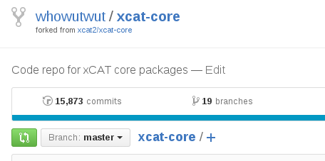
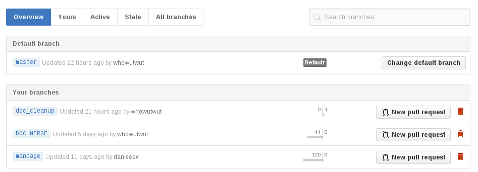
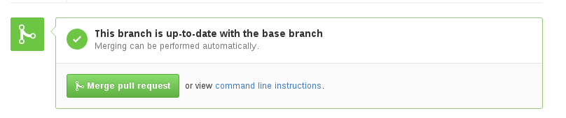
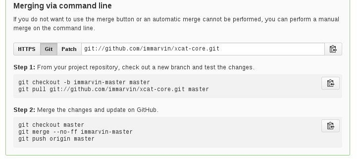

Pull Requests¶
Creating Pull Requests¶
Once your changes are ready to be submitted to the xcat team, the easiest way to generate a pull request is from the GitHub UI.
Under your project, click on the “branches” link
Find the branch that contains your changes and click on the “New pull request” button
Submit the pull request!
Changing Pull Request¶
After submitting a pull request, you may get comments from reviewer that something needs to be changed. Then you can use following steps to change your pull request.
Change any code and add them to be tracked in git
$ git checkout <mybranch> $ vi <files> $ git add <files>
Commit the change to last commit in the branch instead of creating a new commit. This step is useful to keep the change of this pull request in one commit instead of multiple ones.
$ git commit --amend
Push the new commit to remote repository. Then the commit will be displayed in pull request automatically.
$ git push origin <mybranch> -f
Resolving Conflicts in the Pull Request¶
During the reviewing of your pull request, another pull request may be merged which contains changes that conflicts with your change so that your pull request can no longer be merged automatically. You can use following steps to resolve the conflicts.
Update the upstream, replace <upstream> with the name if your upstream repo
$ git fetch <upstream>
Checkout to your working branch
$ git checkout <mybranch>
rebase your branch to the master branch in the <upstream>
$ git rebase <upstream>/master
In the previous step, If there are conflicts, the rebase will stop and you will see CONFLICT messages for certain files. Edit the files to resolve the conflicts manually and then use git add the re-add the files to be tracked in git.
$ vi <files> $ git add <files>
Continue the rebase repeat the step above for any additional conflicts
$ git rebase --continue
Once the rebase is complete and conflicts are resolved, force push the change to your repository
$ git push origin <mybranch> -f
If all the conflicts are resolved, the pull request should automaically turn green again and is able to be merged automatically.
Reviewing Pull Requests as a Maintainer¶
When you are looking over a pull request, you can merge the changes into your own temporary branch to give the code or changes a try before merging into the parent project.
From the merge request, click on the
command line instructionslink:Then under Step 1:, there are instruction for creating a temp branch and pulling the changes from the pull request:
